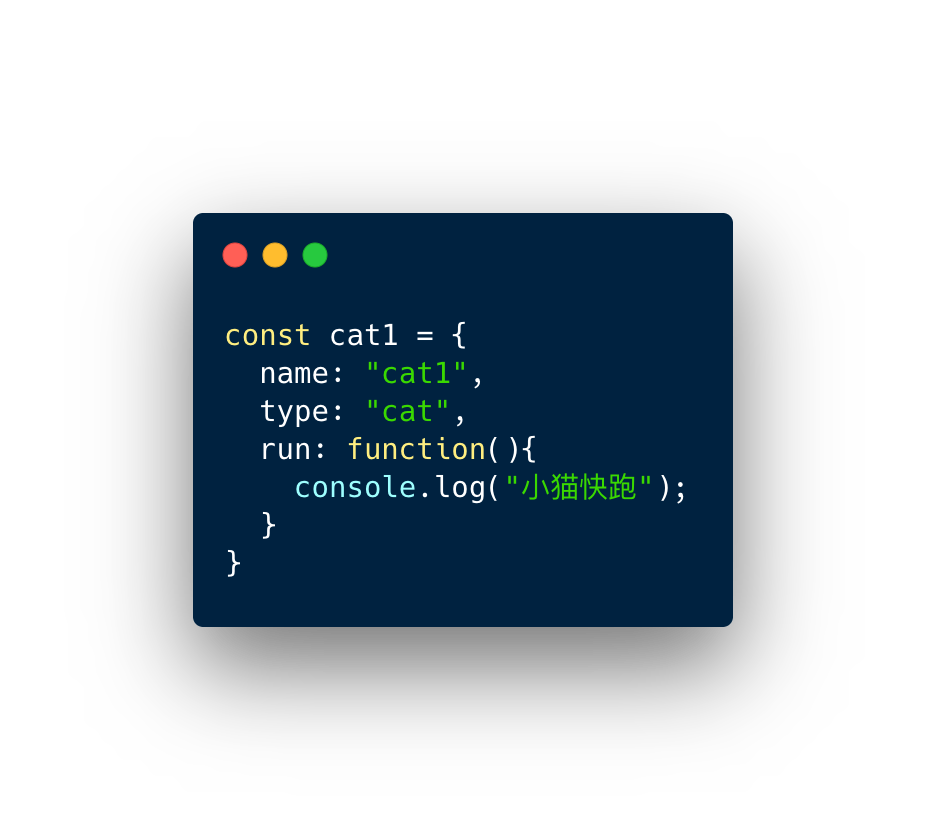

1. 字面量
我们一般使用字面量的形式直接创建对象，但是这种创建方式对于创建大量相似对象的时候，会产生大量的重复代码。
1 | const cat1 = { |
但 JavaScript 和一般的面向对象的语言不同，在 ES6 之前它没有类的概念。但是我们可以使用函数来进行模拟，从而产生出可复用的对象。
缺陷
- 不能产生可服用的对象
2. 工厂模式
1 | function createCat(name){ |
工厂模式的主要工作原理是用函数来封装创建对象的细节，从而通过调用函数来达到复用的目的。但是它有一个很大的问题就是创建出来的对象无法和某个类型联系起来，它只是简单的封装了复用代码，而没有建立起对象和类型间的关系。
缺陷
- 无法识别实力的对象类型
3.构造函数模式
1 | function Cat(name){ |
JavaScript 中每一个函数都可以作为构造函数，只要一个函数是通过 new 来调用的，那么我们就可以把它称为构造函数。
执行构造函数 new Cat():
- 首先会创建一个新对象
- 然后将新对象的原型
__proto__指向构造函数的 prototype 属性 - 然后将执行上下文中的 this 指向这个新对象
- 最后再执行整个函数，如果返回值不是对象，则返回新建的对象。
因为 this 的值指向了新建的对象，因此我们可以使用 this 给对象赋值。构造函数模式相对于工厂模式的优点是，所创建的对象和构造函数建立起了联系，因此我们可以通过原型来识别对象的类型。但是构造函数存在一个缺点就是，造成了不必要的函数对象的创建，因为在 js 中函数也是一个对象，因此如果对象属性中如果包含函数的话，那么每次我们都会新建一个函数对象，浪费了不必要的内存空间，因为函数是所有的实例都可以通用的。
优点
- 所创建的对象和构造函数建立起了联系，因此我们可以通过原型来识别对象的类型
缺点
- 实例的函数属性
run会重复创建，run是可以通用的，浪费了不必要的内存空间
4. 原型模式
1 | function Cat(){} |
因为每一个函数都有一个prototype属性，这个属性是一个对象，它包含了通过构造函数创建的所有实例都能共享的属性和方法。因此我们可以使用原型对象来添加公用属性和方法，从而实现代码的复用。
优点
- 通过
prototype对象共用属性和方法
缺陷
- 无法传递初始化参数
- 共用的引用类型的属性的修改会影响所有实例
5. 组合使用构造函数模式和原型模式
1 | function Cat(name){ |
这是创建自定义类型的最常见方式。因为构造函数模式和原型模式分开使用都存在一些问题，因此我们可以组合使用这两种模式，通过构造函数来初始化对象的属性，通过原型对象来实现函数方法的复用。这种方法很好的解决了两种模式单独使用时的缺点，但是有一点不足的就是，因为使用了两种不同的模式，所以对于代码的封装性不够好。
优点
- 采用了构造函数模式和原型模式的优点，这种混成模式是目前使用最广泛，认同度最高的一种创建自定类型的方法。
缺点
- 用了两种不同的模式，所以对于代码的封装性不够好。
6. 动态原型模式
1 | function Cat(name){ |
这一种模式将原型方法赋值的创建过程移动到了构造函数的内部，通过对属性是否存在的判断，可以实现仅在第一次调用函数时对原型对象赋值一次的效果。这一种方式很好地对上面的混合模式进行了封装。
优点
- 封装了原型